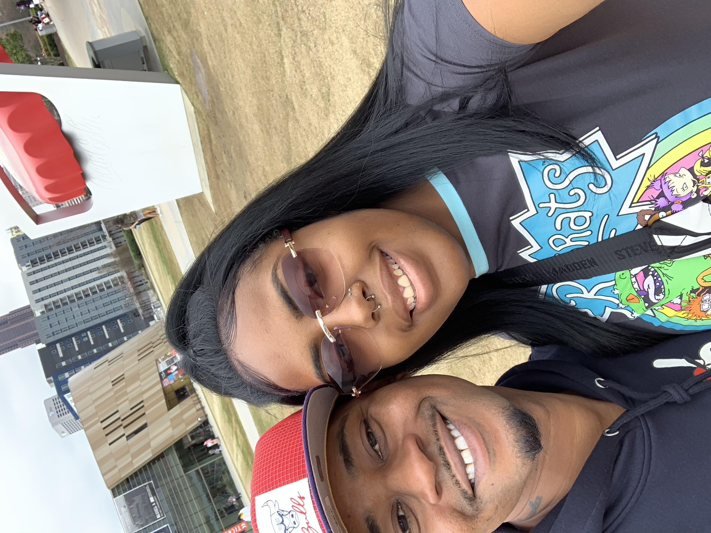
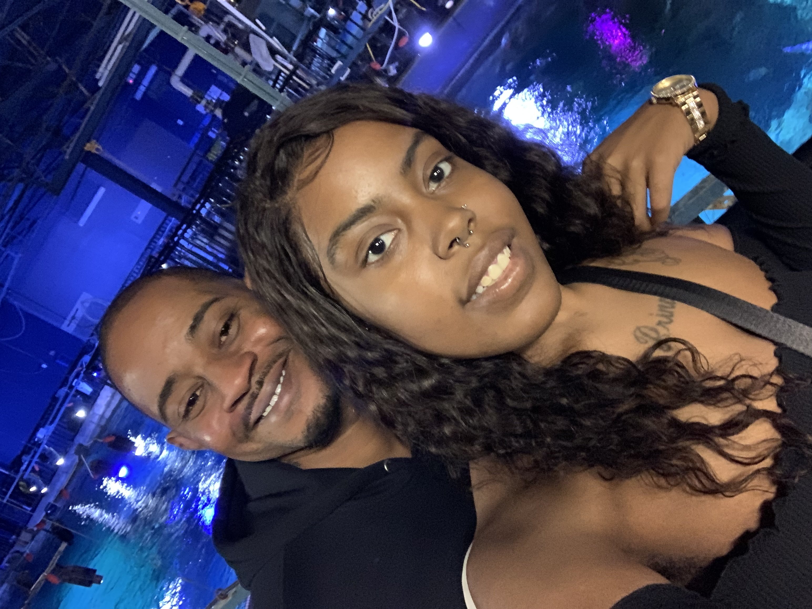

Who Are Epiphany's Parents?
Robert and Clarissa are the parents of Epiphany. We started dating in October 2019 and became engaged Christmas of 2024. Since being together we have lived in Florida and now Tennessee. In 2023 we began trying for a family, it was really difficult for us to concieve and it caused me to go deeper into depression. When we finally found out we were expecting Epiphany, her dad chose her name, I immediately knew her middle name had to Miracle because for us she was a miracle.
Robert and Clarissa


Our Parenting Goals
Our plan with Epiphany is to use the gentle parenting method. Gentle parenting can help Epiphany grow by building trust, confidence, and helping her feel safe and loved. It teaches her how to understand her feelings and learn good behavior with patience and guidance. At 20 months old, we can use simple choices, like letting her pick between two toys or snacks, to help her feel independent. We can also stay calm during tantrums, name her feelings, and gently redirect her to teach her how to manage emotions. Using routines and simple boundaries, like teaching “gentle hands,” can help her learn respect and self-control. Over time, gentle parenting can help Epiphany grow into a kind, confident, and emotionally secure child.